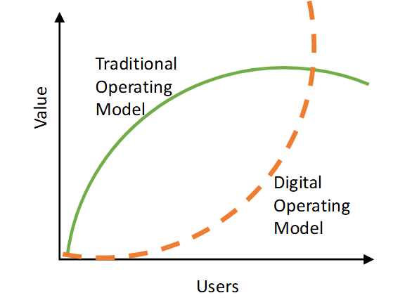
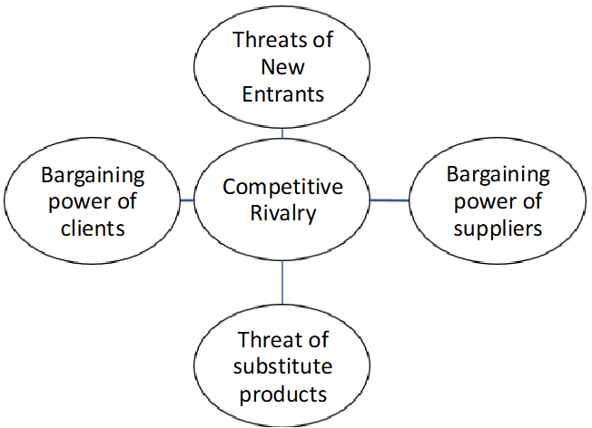

Competing in the Age of AI
- This section introduces how organizations evolve from competing through business analytics to competing in the age of AI (CTAI). It explains how data-driven decision-making transforms into AI-enhanced systems that learn, scale, and adapt across business functions. The discussion connects classical frameworks—like Porter’s Five Forces and the Value Chain—to digital-era dynamics such as network effects, value capture, and platform competition. Drawing on Iansiti & Lakhani (2020), it highlights how firms achieve advantage not just through better data, but through architectures that continuously learn and connect across networks.
Reference:
Chapter 6 from Iansiti and Lakhani (2020) in Competing in the Age of AI explains how artificial intelligence transforms firms by digitizing activities into scalable, connectable, and self-improving systems.
The chapter outlines a strategic framework for AI-driven businesses that leverages network and learning effects while addressing key concepts such as multihoming, disintermediation, and network bridging, using real-world examples like Uber and Airbnb.
Competing Through Business Analytics (CTBA)
Competing through business analytics (CTBA) means using data, statistical analysis, and predictive modeling to gain a strategic advantage over competitor.
It involves making better, faster, and more informed decisions by systematically analyzing data across all areas of the business.
CTBA and the Organization
Firms that compete through analytics build capabilities in data collection, storage, analysis, and interpretation, making data a strategic asset. These firms often develop a culture of testing, learning, and optimization across the entire organization.
Data-Driven Decisions: Relying on insights from data rather than intuition or guesswork.
Performance Improvement: Enhancing efficiency, productivity, and outcomes using measurable evidence.
Predictive Power: Forecasting future trends or behaviors (e.g., customer churn, sales, demand).
Competitive Differentiation: Gaining an edge through smarter operations, marketing, customer targeting, or innovation.
Where is the AI in CTBA?
CTBA is about using data and analysis to drive smarter decisions and outperform competitors. It traditionally involves:
Descriptive analytics - what happened (reports, stats, visualizations)
Diagnostic analytics - why it happened (causal inference vs. correlation)
Predictive analytics - what will happen (forecast models)
Prescriptive analytics - what should we do ((e.g., dynamic pricing recommendations, optimal supply chain routes)
KPIs - Are we achieving business goals?
AI doesn’t replace analytics –it supercharges it by making it faster, deeper, and more dynamic, allowing business to compete not just with better data - but with better learning.
What does AI Bring to Business?
AI brings to automation, scale, and adaptability to analytics, allowing business to:
Continuously learn from new data (machine learning).
Make real-time decisions (streaming analytics).
Personalize at scale (recommendation systems).
Go beyond prediction to causal and autonomous decision-making.
Understanding AI’s Impact In Specific Business Domains
Marketing: Customer segmentation, personalization, targeting.
Customer Segmentation: Grouping customers based on shared characteristics to tailoring marketing or product strategies.
Personalization: Delivering individualized experiences, often powered by AI recommendations.
Operations: Inventory management, route optimization, demand forecasting.
- Demand Forecasting: Predicting future customer demand using historical data and AI models.
Finance: Risk modeling, algorithmic trading, fraud detection.
Algorithmic Trading: Automated financial trading using pre-defined AI rules and models.
Fraud Detection: Using data and machine learning to identify unusual patterns that may indicate fraud.
HR: Resume screening, performance prediction, talent analytics.
Healthcare: Diagnostic tools, patient risk prediction.
How AI-driven Decision-Making is Transforming Industries
AI-driven decision-making is transforming industries by enabling faster, more accurate, and more scalable decisions than were previously possible with traditional methods.
AI transforms how firms:
Compete on speed and scale
Create personalized experiences
Operate with greater efficiency and agility
Continuously learn and improve from data
Strong vs. Weak AI
Strong AI refers to computer systems that replicate or simulate human reasoning and behavior, aiming to match or exceed human cognitive abilities.
- A system that can tutor you in calculus, negotiate a business deal, write a novel in your style, and then cook up a new recipe – all with the same underlying intelligence.
Weak AI refers to computer systems designed to perform specific tasks traditionally done by humans, without replicating human consciousness or general reasoning.
Siri, Alexa, or Google Assistant: Can recognize voice commands, set alarms, or fetch weather updates, but cannot engage in deep reasoning in awareness.
ChatGPT (today’s models): Excellent at generating language, but it doesn’t “understand” the world – it predicts patterns in text.
Exploring Weak AI Further
Weak AI can be sufficient for an Organization
Transformative change doesn’t require human-like “strong AI” – just systems that can perform tasks traditionally done by humans.
Practical applications matter
- Tasks like prioritizing content, pricing, or analyzing behavior can be effectively handled by imperfect AI.
Business impact is already real
- Even without perfect replication of human reasoning, weak AI is reshaping how firms function and compete
Transforming Competition
Think of evolution of photography over time
From Disruption to Reinvention: Traditional tech disruptions ( e.g., films vs. digital photography) replaced older models - AI redefines entire industries and operating models.
Digital Operating Models: AI enables firms to scale, learn, and expand scope rapidly - at near-zero marginal cost - through algorithmic execution.
New Breed of Competitors: Companies like Facebook, Tencent, and Amazon weren’t direct rivals to traditional players like Kodak–they operated on new rules and displaced them indirectly.
Strategic Implications of AI-Driven Firms
Value Creation Shift:
- AI firms extract value from data, networks, and user interactions, not just products or services.
Operating Model Advantage:
- Digital firms overcome traditional limits of complexity, allowing infinite scalability and adaptability.
Competitive Collision:
- Traditional firms face existential threats — not from better versions of themselves, but from companies with fundamentally different architectures and strategies.
The collision between traditional and digital operating models

Business Strategy & Competitive Advantage
AI changes how firms create and sustain competitive advantage (e.g., data network effects, faster innovation).
Key concepts to understand:
Competitive Advantage: A condition or circumstance that puts a company in a favorable or superior business position.
Porter’s Five Forces: A framework for analyzing a company’s competitive environment: industry rivalry, threat of new entrants, threat of substitutes, bargaining power of buyers, and bargaining power of suppliers.
Network Effects: Network effects occur when the value of a product, service, or platform increases as more people use it.
Value Capture Dynamics: How a firm retains and monetizes the value created (e.g., pricing, data control, platform fees).
Competitive Advantage
Competitive advantage is increasingly defined by the ability to shape and control these networks and harvest the volume and variety of the transactions they carry. Competitive advantage therefore moves toward the organizations that are most central in connecting businesses, aggregating the data that flows between them, and extracting value through powerful analytics and AI (lansiti et al., 2020).
Now strategy is shifting to the art of managing the firm’s networks and leveraging the data that flows through them. Just as industry analysis dominated strategy over the past few decades, we believe that network analysis will increasingly shape strategic thinking in the future. (lansiti et al., 2020).
Discussion Point: How do firms gain competitive advantage in the market? What makes them unique?
Porter’s Five Forces Model

Porter’s Five Forces model is a strategic framework used to analyze the competitive forces that shape every industry and influence its profitability, helping businesses assess their market position and develop effective strategies.
Competitive Rivalry: Assesses the intensity of competition among existing firms in the industry. High rivalry can limit profitability.
Threat of New Entrants: Looks at how easy or difficult it is for new competitors to enter the market. Barriers to entry affect the threat level.
Bargaining Power of Suppliers: Evaluates how much power suppliers have to drive up prices or reduce the quality of goods/services.
Bargaining Power of Buyers: Measures the ability of customers to influence pricing and terms. Powerful buyers can demand lower prices or higher quality.
Threat of Substitutes: Considers the availability of alternative products or services that can perform the same function. More substitutes increase competitive pressure.
The Value Chain and Network Effects
Value Creation Dynamics describe how a platform generates and expands value for its participants – users, complementors, and the platform owner – through interactions, data flows, and network effects. These dynamics reinforce each other, creating self-sustaining growth loops:
Direct Network Effects
- Value increases as more users join the same side of the platform (e.g., more people on WhatsApp make it more valuable to each user).
Indirect Network Effects
- Value increases as participation grows on the other side of the platform (e.g., more app developers make iOS more valuable to iPhone users, and vice verse).
Learning Effects
- Value grows as data accumulates and systems improve (e.g., Netflix recommendations improving as viewing data expands.)
Complementor Contributions
- External firms or individuals add value by creating content, apps, or services that enhance the platform. (e.g., App developers on Apple’s App Store add value to the iPhone ecosystem by creating apps that enhance user experience and increase platform stickiness.)
Value Capture Dynamics
The appropriability of value refers to the extent to which a firm can capture and retain the economic value created by its platform, rather than having that value flow to users, complementors, or competitors.
In other words, even if a platform generates a lot of value through network effects, who gets to keep that value?
For example:
Apple’s App Store: Apple appropriates value by charging app developers a commission (historically 30%) on sales. While developers benefit from access to users, Apple captures a large share of the value.
Google Search: While the search platform creates value for users and advertisers, Google appropriates much of it by monetizing through ads and controlling data.
Ride-sharing (Uber/Lyft): Drivers create much of the service value, but the platform appropriates value by taking a percentage of each fare.
Some Factors Affecting Appropriability
The degree of appropriability depends on factors like:
Control of key assets (data, algorithms, user base).
- Google Search captures enormous value because it controls the search algorithms, the user base, and the data flows. Competitors may create value in the search market, but Google appropriates most of it due to its asset control.
Switching and multihoming costs (if users or suppliers can easily move elsewhere, appropriation is weaker).
- Apple’s iOS ecosystem locks users in through high switching costs: once you’ve invested in iPhones, AirPods, iCloud, and App Store purchases , moving to Android is costly. This allows Apple to appropriate more value from users and developers. By contrast, in ride-hailing (Uber vs. Lyft), switching costs are low- riders can open both apps and choose the cheaper option- so platforms capture less value.
Regulation and bargaining power (governments or complementors can limit how much value a platform extracts).
- App Store fees show how regulation and complementor power affect appropriation. Apple historically took a 30% commission, but regulatory pressure and bargaining by large developers like Epic Games have forced Apple to reduce or modify fees in certain cases, limiting how much value it can appropriate.
Multihoming and Value Capture
Multihoming refers to the practice of users or firms participating in more than one platform at the same time, rather than committing exclusively to a single one.
For example:
A consumer might use both Uber and Lyft to compare prices or availability.
A content creator might post videos on both YouTube and TikTok to reach a wider audience.
A merchant might list products on Amazon and eBay to capture different customer segments.
Multihoming matters strategically because:
If multihoming costs are low (easy to join multiple platforms), competition between platforms is fiercer.
If multihoming costs are high (due to switching fees, data lock-in, or exclusive contracts), platforms gain more power to capture and retain users.
Disintermediation and Value Capture
Disintermediation is when platforms cut out middleman, creating direct producer- consumer connections and often reshaping entire industries.
Examples:
Travel booking: Online platforms like Expedia or Airbnb disintermediate traditional travel agents by letting consumers book directly.
Music Industry: Streaming services like Spotify or Apple Music reduce the need for record stores and even diminish the role of distributors.
Retail: Direct-to-consumer brands (like Warby Parker or Glossier) bypass traditional retailers by selling directly through online platforms.
Disintermediation and Factors Affecting Appropriability
Control of key assets
- Disintermediation threatens this. If intermediaries (like platforms, marketplaces, or distributors) can be bypassed, then the incumbent loses some of its control over user data, algorithms, or relationships.
Switching and multihoming costs
- Disintermediation often reduces these costs by enabling direct connections between producers and consumers (e.g., a brand selling directly through its website or app instead of through Amazon). Lower switching/multihoming costs weaken appropriability.
Regulation and bargaining power
- In some cases, regulation forces disintermediation (e.g., open banking rules requiring banks to let fintechs directly access customer data), thereby reducing how much value the incumbent can appropriate.
Network Bridging and Value Capture
Network bridging refers to when a platform (or a firm using the platform) connects two or more otherwise separate networks, allowing value to flow between them and creating new opportunities for growth.
Instead of just strengthening one network, bridging links distinct user groups, industries, or ecosystems together.
Examples:
LinkedIn bridges professional networks across industries, letting recruiters, job seekers, and companies interact in ways that wouldn’t happen within a single firm’s HR system.
Amazon Marketplace bridges sellers from diverse industries with millions of global buyers, turning a retail platform into a multi-industry ecosystem.
Apple’s App Store bridges app developers and iPhone users, creating cross-side network effects that amplify the value of both groups.